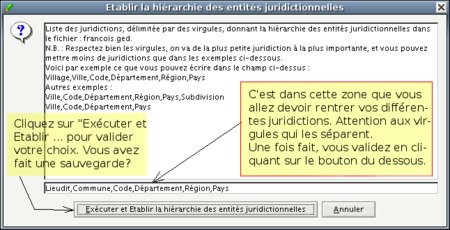
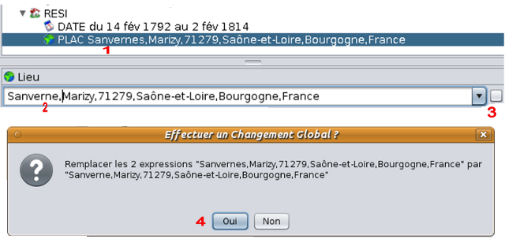

Mannaging places
Resumo
- Sorting jurisdictions
- Inputing jusrisdictions
- Register the order of jurisdictions in your Gedcom file
- Globally change formuling of jurisditions
This is an important chapter. A close reading
will avoid having to, some day, repeat all your work.
Adopting a universal and uniform jurisdictions order,
compliant with the Gedcom standart, is indispensable for
ease your exchanges and make the geolocation of the
events more accurate.
CAUTTION : before any modifications, make
a backup of your Gedcom file.
Sorting the jurisdictions
To create a place, you should classify the different
jurisdictions in growing order of importance, separating
each level with a comma. If a level is empty,
keep the comma.
Advise from Ancestris: unlike certain
practices, don't leave blank spaces between jurisdictions.
Seven levels of jurisdiction are possible:
Hamlet,City,,ZIP_Code,County,State,Country
It's not mandatory to have them all but you should
respect the hierarchy of this order.

|
Although Ancestris allows to input the ZIP
code, it is preferable to use the
INSEE code. As a matter of fact, a ZIP code can
group more cities while the INSEE code
(geographic codding system
created in 1943), is unic for each city (only valid in France).
|
|
Inputing jurisdictions
If you chose ''Distinguish for editing the
jurisdictions for places'' (cf
First Settings) you don't need the following explanations, since you will be
inputing jurisdictions level by level.
For those who didn't choose this option, the easiest way to
explain is an example:
For an event happened in the hamlet of
"Mézin", at Allanche (INSEE code 15160),
Cantal department, Auvergne, France. You should
input:

- Don't write anything after the word France.
- If hamlet is unknown, just put a comma at the begining
of the line.
- For an event to which only the city
is known, write: ,Allanche,,,, (1 leading comma and
4 trailling commas).
It's simple, to remember: ''From the smalest to the greates and each term is
comma separated''.
Auto-complete field
Depending on the data you inputed, you will see a list that offers
the already known places starting with the same characters,
for you to choose from. → A left click over the suggested line,
click on OK to validate and that's it.
If you selected
"Preferences -
Distinguish jurisdictions...", this function is also present,
but line by line.
 Do not
confuse registering to the Gedcom file
with displaying on the views. Do not
confuse registering to the Gedcom file
with displaying on the views.
Register in the Gedcom file, it is here you
should respect the standart organization of the
jurisdictions.
Displaying places in views, it is the way
you will see the jurisdictions in views
(for example, choose to just see hamlet and
country on tree view - cf
Preferences).
|
Register jurisdctions order in the Gedcom file
It is important that this places hierarchy (or jurisdictions
order) is described in the header of your Gedcom
file. It's the internal rule, established by the Gedcom file
that allows Ancestris e the other
users to reed the jurisdictions. This record
determines the format of all your "PLAC" tags.
This register should be made imediately whe creating
a genealogy or right after importing a
genealogy created with another programa
(many do not respect the standart).
- 1st solution:
- Open Gedcom editor. Select a PLAC line
(anyone)
- left click (to highlight) and then right click
to open the context menu.
- click on ''Set hierarchy
for place-values''

Use the input line to control, modify or
input the different jurisdictions you have
defined for all you genealogy.
To validate your choice: click on "Proceed
and Set hierarchy for place-values locais".
Done! You should consider backing up your work.
- 2nd solution:
- Open your Gedcom file with a text editor.
For Linux, use Gedit, or Nedit or Jedit. For Windows,
use Notepad (never Word). For MacOs, use TextEdit.
0 HEAD
1 SOUR ANCESTRIS
2 VERS 0.5.0.1291
2 NAME Ancestris
2 CORP Ancestris Team
3 ADDR http://www.ancestris.org
1 DEST ANY
1 DATE 21 MAR 2011 <---- the date will be diferent
2 TIME 18:44:12 <---- the time will be diferent
1 SUBM @B1@ <---- you might not have this line
1 FILE john.ged <---- here is where your file name will be
1 GEDC
2 VERS 5.5
2 FORM Lineage-Linked
1 CHAR UTF-8
1 LANG English
It will suffice to add, right after the line
''1 LANG English'', the following two lines:
1 PLAC
2 FORM Hamlet,City,,Zip_Code,County,State,Country
Save your work, and that's it, job done!
If you
already have hundreds of places on your
file, the simple fact of adding these two lines to the header
of the Gedcom file, doesn't change anything in these already
registered places. The only alternate solution would be
go through all of them one by one.
uanother solution to generate the order
of the jurisdictions (if you hesitate in doing it
with the text editor) is to go to "View/Lists
and reports/Tool Box/5 - Manage PLAC Tags".
|
|
Places format, as well as your display preferences
for your Gedcom file can equally
be modified from the plugin
"List of Places".
|
|
Global change of the formulation of jurisdictions
You notice, after finishing, that you have
a typo on a place. Another possibility,
the same location was entered twice
in different ways.
With just a few clicks you can change every place involved:
- select one of the PLAC lines you want to change (1)
- make the changes in the input area (2)-
here we supressed the "s" -, this will show
a checkbox at the end of the line (3)
- check this box and then "Yes" in the confirmation
window (4)
- All that is left to do is click OK at the bottom
area of the editor to validate the changes.

This process is identical from any
of the two editors.